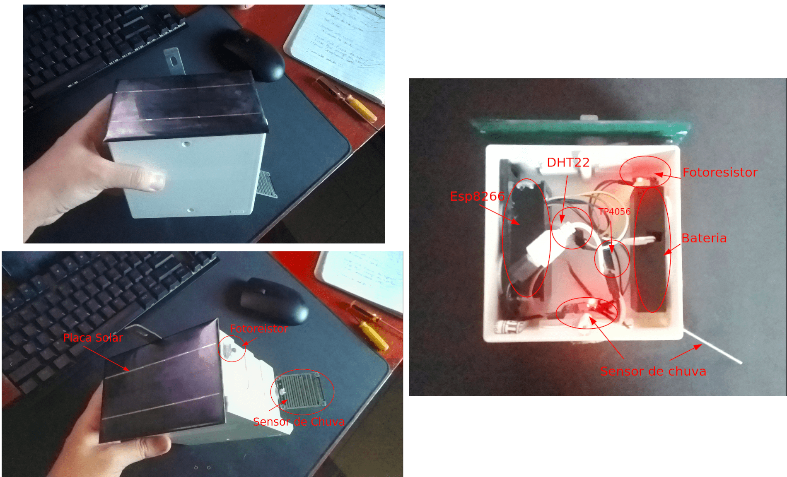
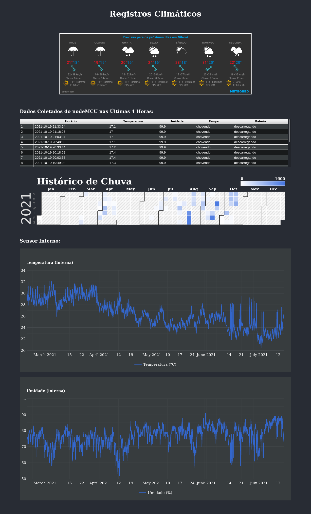

Weather Station - Project
Overview
Esse projeto consiste em um sistema capaz de medir, em intervalos de 15 minutos, as condições atmosféricas, tais como: Temperatura, umidade relativa do ar, grau de luminosidade e fazer a verificação de precipitação. O sistema é gerenciado e processado por uma placa controladora Esp8266 e todas a informações são coletadas e armazenadas em um banco de dados MySQL através da conexão Wi-Fi.
Architecture
O principal componente é o NodeMCU modelo Esp8266, nele estão ligados alguns sensores como DHT22 (sensor de temperatura e umidade), TL-83 (sensor de precipitação), painel solar fotovoltaico (5v 1w), uma bateria 18650 (4.2v 9800mha) TP4056 (placa que alterna a fonte de energia entre o painel solar e bateria) e LDR (sensor de luz foto-resistivo).
O sistema possui alimentação de energia totalmente off-grid, ou seja, na parte noturna é alimentado por uma bateria modelo 18650 (litio, 9800mAh) e durante o dia uma mini placa solar garante a alimentação do sistema e carrega a energia utilizada durante a noite.

Station
Web Page Monitoring
Para acompanhar em tempo real as informações coletadas pela estação, desenvolvi uma págia web com informações em gráficos de forma amigável para que o usuário possa verificar a situação atual e o histórico anterior.

Para ter acesso ao código fonte desse projeto, acesse o meu repositório GitHub.